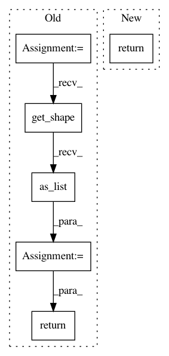

adc869e88b109af683ac94251165f96f7a406bba,onnx_tf/handlers/backend/reduce_sum_square.py,ReduceSumSquare,version_1,#Any#Any#,12
Before Change
@classmethod
def version_1(cls, node, **kwargs):
x = kwargs["tensor_dict"][node.inputs[0]]
axis = node.attrs.get("axes", list(range(len(x.get_shape().as_list()))))
keepdims = node.attrs.get("keepdims", 1) == 1
return [tf.reduce_sum(tf.square(x), axis=axis, keepdims=keepdims)]
After Change
@classmethod
def version_1(cls, node, **kwargs):
return cls._common(node, **kwargs)
@classmethod
def version_11(cls, node, **kwargs):
return cls._common(node, **kwargs)
In pattern: SUPERPATTERN
Frequency: 4
Non-data size: 6
Instances
Project Name: onnx/onnx-tensorflow
Commit Name: adc869e88b109af683ac94251165f96f7a406bba
Time: 2019-10-04
Author: wtsang@us.ibm.com
File Name: onnx_tf/handlers/backend/reduce_sum_square.py
Class Name: ReduceSumSquare
Method Name: version_1
Project Name: keras-team/keras
Commit Name: 037e592f2ba7c18b71bc9b39f84de11af0252863
Time: 2016-01-08
Author: francois.chollet@gmail.com
File Name: keras/backend/tensorflow_backend.py
Class Name:
Method Name: flatten
Project Name: tensorflow/models
Commit Name: 2da86542c46c23ea1ee7e2e214eb685349a6bb75
Time: 2021-03-22
Author: poorvap@google.com
File Name: official/nlp/modeling/ops/decoding_module.py
Class Name:
Method Name: shape_list
Project Name: onnx/onnx-tensorflow
Commit Name: adc869e88b109af683ac94251165f96f7a406bba
Time: 2019-10-04
Author: wtsang@us.ibm.com
File Name: onnx_tf/handlers/backend/reduce_log_sum.py
Class Name: ReduceLogSum
Method Name: version_1